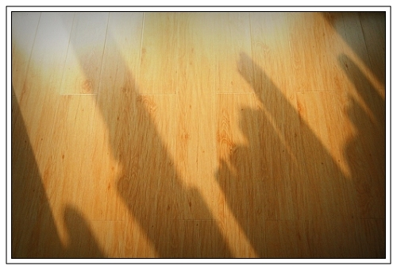
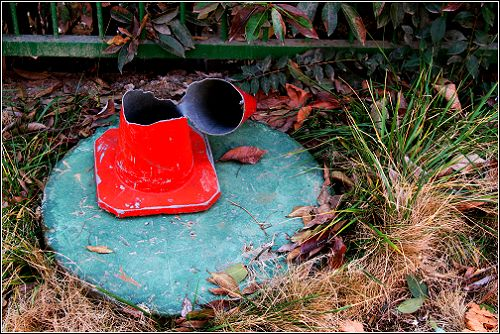
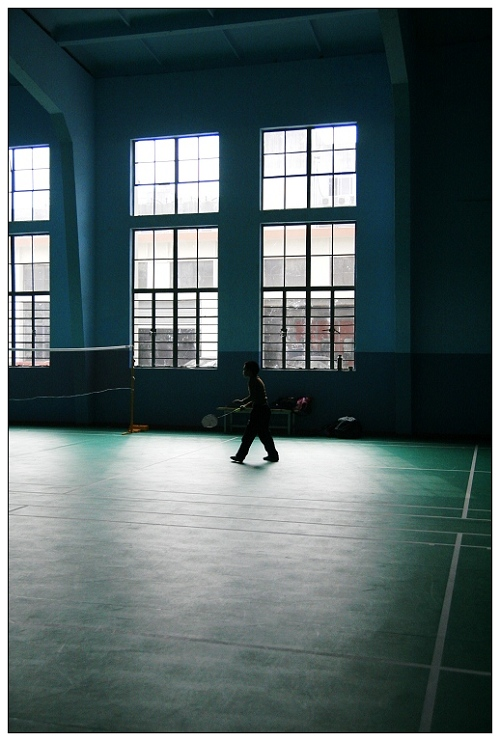
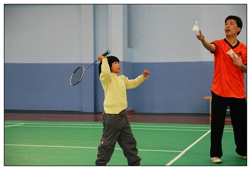
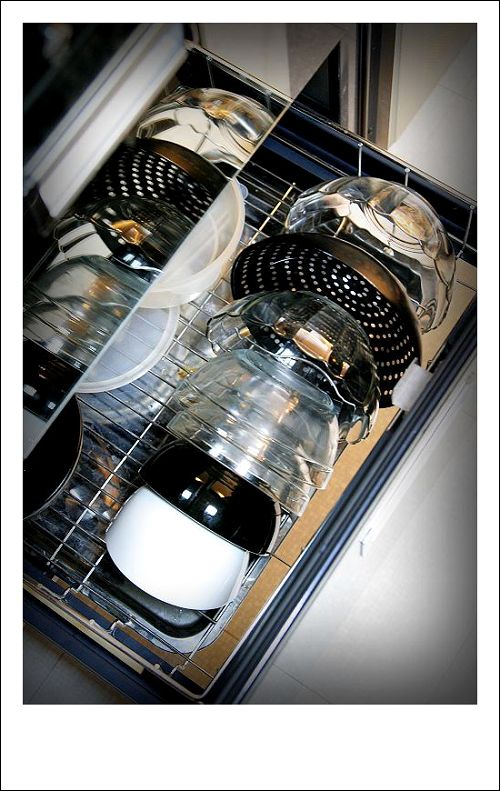
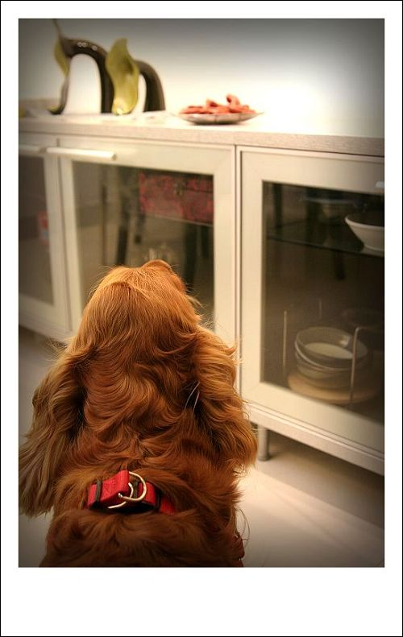
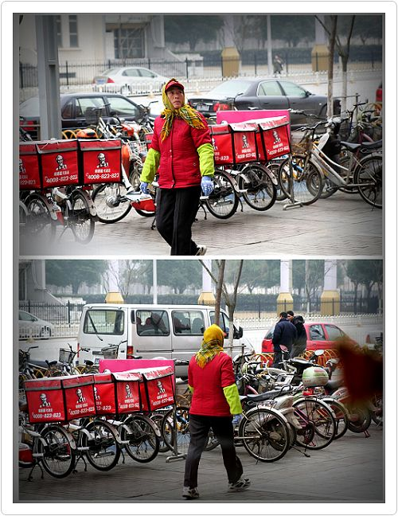

彩.信 @ Feb 11, 2009
春节收到云南风景彩信若干，132开头的手机号码，我充满真诚地一个字一个字回复人家如何如何美，谢谢分享，祝愉快假期.....
春节结束，问去云南的张三，问李四，皆说没有给我发过彩信。
不忍心再继续问王二麻子了......
春节收到云南风景彩信若干，132开头的手机号码，我充满真诚地一个字一个字回复人家如何如何美，谢谢分享，祝愉快假期.....
春节结束，问去云南的张三，问李四，皆说没有给我发过彩信。
不忍心再继续问王二麻子了......
这段时间忙着拍照，没写几个字，还是有一些话要说滴。
公司安装了3G-FAX数码传真，以后通过自己的电脑便可收发传真，这个不希奇，多少年前公司安装过类似的软件，后来不了了之。这次软件有意思的是需要签章的文件，也可通过3G-FAX传给老板，签章后再发回来，速度蛮快。以后我们的屁股可以不用离开椅子了，什么都可以通过电脑来完成。
高科技好是好，苦了高龄职员。
两高之间的关系可以用我昨晚吃的鸭掌来比喻，微辣的俨然还是享受，重辣的就是折磨。两只下去，敢情一张嘴能喷出火来~当然从微辣到重辣，是可以培养滴！
NICKNAMES
* If Laura, Kate and Sarah go out for lunch, they will call each other Laura, Kate and Sarah.
* If Mike, Dave and John go out, they will affectionately refer to each other as Fat Boy, Godzilla and Four-eyes.
EATING OUT
* When the bill arrives, Mike, Dave and John will each throw in £20, even though it's only for £32.50. None of them will have anything smaller and none will actually admit they want change back.
* When the girls get their bill, out come the pocket calculators.
MONEY
* A man will pay £2 for a £1 item he needs.
* A woman will pay £1 for a £2 item that she doesn't need but it's on sale.
BATHROOMS
* A man has six items in his bathroom: toothbrush and toothpaste, shaving cream, razor, a bar of soap, and a towel.
* The average number of items in the typical woman's bathroom is 337. A man would not be able to identify more than 20 of these items.
ARGUMENTS
* A woman has the last word in any argument.
* Anything a man says after that is the beginning of a new argument.
FUTURE
* A woman worries about the future until she gets a husband.
* A man never worries about the future until he gets a wife.
SUCCESS
* A successful man is one who makes more money than his wife can spend.
* A successful woman is one who can find such a man.
MARRIAGE
* A woman marries a man expecting he will change, but he doesn't.
* A man marries a woman expecting that she won't change, but she does.
DRESSING UP
* A woman will dress up to go shopping, water the plants, empty the trash, answer the phone, read a book, and get the mail.
* A man will dress up for weddings and funerals.
NATURAL
* Men wake up as good-looking as they went to bed.
* Women somehow deteriorate during the night.
OFFSPRING
* Ah, children. A woman knows all about her children. She knows about dentist appointments and romances, best friends, favourite foods, secret fears and hopes and dreams.
* A man is vaguely aware of some short people living in the house.
THOUGHT FOR THE DAY
A married man should forget his mistakes. There's no use in two people remembering the same thing!
SO, send this to the women who have a sense of humour and who can handle it.... and to the men who will enjoy reading it.
薇安：斜进屋子的阳光，还有午后煮的一壶柚子茶。是我最后记录的幸福。
而信箱筒已经在我们生活中的比重越来越小。
Christina：咿！我们不约而同地都拍了阳光~好象我从来没打开过信箱，虽然看到里面插着信件。遇到你我才知道什么是真正的追求完美。



Christina：大太阳哦，气温一下回暖到15度了，据说明后两天会到20度！阳光明媚，心情也明媚！
薇安：太阳果然暖洋洋，温度直升。利用好这个大好春日的最好办法就是晒被子吧。。。
老百姓的小幸福。



薇安：我这么有兴致，中午特意打车去看那个元宵的台湾小吃展。风很大，可我还是打包了好几样回来吃。贵虽贵点，也要活得有滋有味嘛。
Christina：这么多好吃的哇，怎么会是台湾小吃呢？明明就是俺们大陆的小吃嘛：）那个鱼是什么食品啊？


Christina：元宵节哦，外面几个小时连绵不断的鞭炮声向这个春节做着疯狂的告别。回到家，LUKE就开始粘人了，我就半个屁股坐在椅子上，要是跌地下，非扭断这小子的脖子不可！刚才LUKE被一阵急促的鞭炮声惊醒，掉地上了，朝着鞭炮声的方向怒吼~
薇安：元宵的烟花在耳边彻响了整晚。原来我们还是很传统的。没想到LUKE小伙这么粘人啊，下次要给我来个稍息立正站好。


薇安：羽球运动得从小练起！我们都是业余爱好者而已。坚持哦。我喜欢这个用旧厂房改的羽馆，火车厢式的房顶和蓝绿搭调，最主要是窗外射进的阳光，让人恍惚。
Christina：打羽毛球可比打网球出汗多哦，这个天小心着凉。今天你拍的照片我都喜欢。



Christina：周末宅在家里，默默地生活，追随自己内心的渴望。这种沉浸能让我体会到一种全身心的依赖，我是不是真的稳定下来了？
薇安：细致用心的女主人总能以漂亮的餐厅布置令人垂涎。从细节见品味。



薇安：城市的日新月异犹如孩子的成长般迅速。我更爱看孩子们的笑脸。
我说，来排一排拍个照，立马站队按快门。我喜欢和你们说话，配合太好了嘛。
Christina：苏州和南京看上去差不多了，我们都生活在冰冷的钢筋水泥之间。孩子们在玩纸飞机吗？


Christina：图一、星期六，阴。坐在茶几前边看书边吃零食。这才发现玻璃烛台上已落满灰尘，犹如我那落满灰尘的浪漫一般。
图二、冗长的电话，有她平衡着。
薇安：哪个女人没有浪漫情怀，哪个女人不爱小资，哪个女人不爱收藏装饰品。
喜欢思考的女子是美丽的。


薇安：我喜欢对称，也喜欢斜角构图，别取笑我的呆板。暖棚的草莓，突然让人那么怀念夏天。亲爱的，其实我想让你猜那一朵梅花我拍的是什么？
Christina：这个天就吃草莓，真奢侈。
我就不喜欢对称的结构， 那朵梅花是杯盖吗？


Christina：图一、中午在家门口遇到这只野猫，冬天来临之前在地下室给它弄个窝，还有猫粮和水，窗户留了供它进出的空隙。小黑一点不怕人，白天会在保安的小房子里烤火取暖，好肥的黑猫。唤它几声就会跟着你走，我就是这样把它引到地下室去的。luke见了它没命地追，可狗永远追不上猫，因为猫会上树；)树下坐着守侯的呆luke~
图二、在KFC解决的午饭，外面这位大姐来回走了两趟，令人眼前一亮。
薇安：你猜出来猫在思考什么了吗？每个生命都有属于自己的快乐和自在，我们谁也别羡慕。


薇安：中午的快乐时间留给了浴室。哼着我爱洗澡的曲子将水雾慢慢弥漫起来。
Christina：依然冷冷的春，贪恋着橘色灯光里的暖。
浴室里“有女如玉，颜如舜英，舒而脱脱兮，无感我帨兮......”
那张小凳子我也有一只：）是湖兰色的。
整个浴室的色调和摆设，反映出一个典型的女孩子的内心。

Christina：图一、阳台外的铸铁花艺，模糊了景色；
图二、别忘了有句针对哲学家的谚语是这么说的：“按照我说的做，别按照我做的做。”
图三、被人丢弃的红掌，整棵耷拉着。我收留了它，让它居住在一个白色的陶瓷花盆里，根部浇透水，中午看到它微微挺起的身体，好开心~
薇安：文字里的快乐和水池边的一点绿，透过阳光撒进她的内心。
那一点点的烦扰是否已随风而逝？

灰子 Says:
1、摄影是一种减法艺术，需要培养一种善于提炼和概括的思维及独特和多元的眼光。通过观察和感悟，把自己感受到的情景和情绪从纷繁复杂的事物中抽离出来。
2、画面之所以干净和唯美，是因为首先拍摄者需要具备美的理解；其次通过构图上的取舍、光影上的对比、景深上的虚实等使画面干净或者达到自己的意愿。
3、很多喜欢摄影的人不懂得如何通过摄影表现自己的情绪、如何表现自己的生活、如何关注身边的亲密朋友、以及对社会的看法和理解甚至批判。而是仅把目光投向花花草草、山山水水以及漂亮的美美。如你能注重记录自己的生活，并能把自己的生活记录的纯粹透彻，再加入自己的点儿小情绪，那已经是非常好的照片了。这个时候构图、光影、景深也显得不那么重要了。
4、摄影或者拍照片其实是很个人的东西。是发现自己、认识自己；自己看外界，自己过生活的真实记录。像戴安娜·阿勃丝、南·戈尔丁、萨丽·曼、辛迪·舍曼等这些享誉全球的女摄影家也都把目光积聚于此。
5、所以，摄影能否愉悦自己、能否被自己喜欢就足够了。若要再上升一个层次，像尤金·史密斯，塞巴斯提奥·萨尔加多，约瑟夫·寇德卡那样，摄影就会很辛苦，需要付出很多代价。
呵呵，以上是对你留言的答复，纯粹是自己的浅显的理解，望能参考。
以上来自灰子的留言，推荐他的blog"灰巷"。